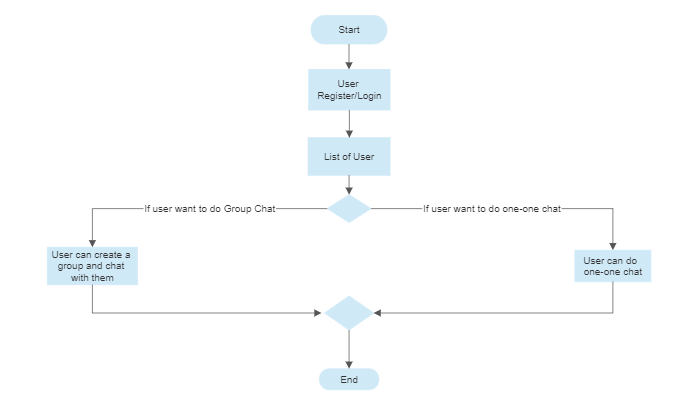
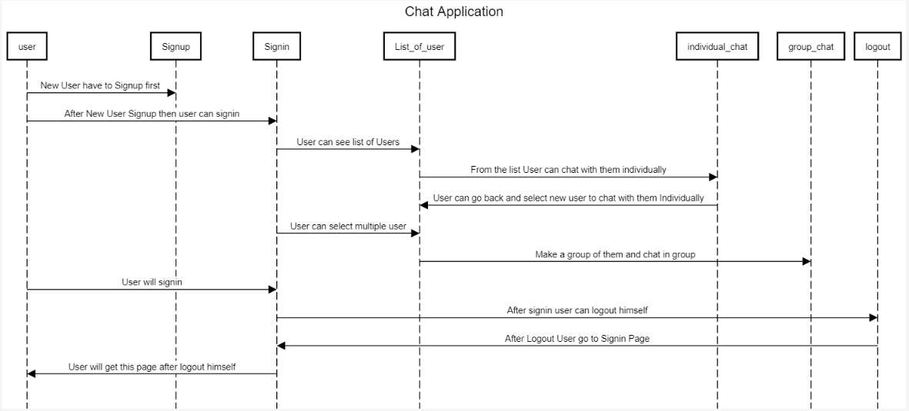

Built with Dhanrajsinh Parmar as an Advance Web Technology (01CT0625) coursework project at Marwadi University, this is a real-time single and group chat application using React.js for the frontend, Node.js and Express with Socket.IO for the backend, and MongoDB for data storage. Users register and sign in, search the list of other registered users, and start a one-on-one conversation or create a group chat with several people at once.
Messages are delivered in real time over sockets, with full chat history kept per conversation and per group so nothing gets lost between sessions. Group chats support adding multiple members at creation time and showing each member's messages inline, while the one-on-one view lets a user jump back and forth between contacts from a single chat list. The app also includes secure authentication, input validation, and structured error handling for server-side and network issues.
After signing up and logging in, a user picks between chatting one-on-one with someone from their contact list or creating a group first — both paths converge back to the same chat experience.

The sequence diagram traces a full session: signing up, signing in, browsing the user list, chatting individually or forming a group, and finally logging out.
